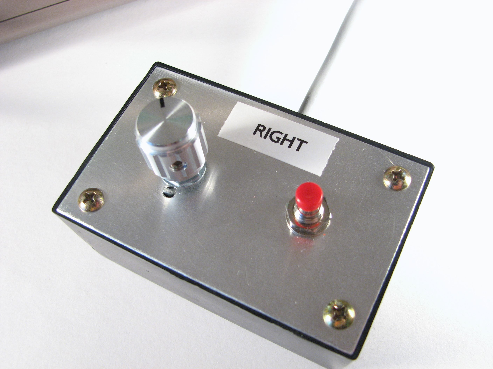

The History of Video Games
Spencer Baumann
1950 - 1970
The Beginning of Video Games
Modern-day electronic gaming all began back in circa 1958, where
physicist William Higinbotham created Tennis for Two, a Pong-like
game which utilitized an oscilloscope to display graphics. It was controlled
by a chunky metallic box with a knob, for trajectory, and a button,
for hitting the ball.

The knob-and-button controller for Tennis for Two.
Years later, in 1972, consumer electronic company Magnavox released
the first commercial video game console: the Magnavox Odyssey.
Rather than rendering full-color graphics, the Odyssey only displayed
white boxes that would come to life by placing an overlay on your TV screen.
1972 - 1980
Original Arcade Games / 1st Generation
Now that video gaming had been publicized, companies like Atari, Inc.
had decided to dip their toes into this newborn industry. Atari, Nintendo, and many other companies then released
various arcade cabinets, spreading from arcades to restaraunts to just
about anywhere. Some famous games of this day included Donkey Kong
and Pong.
1976 - 1982
2nd Generation Gaming Computers
Video game companies were already booming, some companies had dreams
of bringing more video games to home environments, as technology had
evolved far past the Odyssey. In 1977, Atari began this trend and trope
with the Atari 2600. Unfortunately, this was near the time that
the video game market took a turn for the worst with a giant market
crash, with games like the infamous E.T. the Extraterrestrial
declined in quality so intensely, it was unknown if video gaming would
exist any longer. The later releases of Mattel's Intellivison in 1980
and Coleco's ColecoVision barely helped scoop the industry of where it lied—the bottom of the barrel.
1983 - 1995
3rd Generation Gaming Systems
The industry was still reeling and reeking from 1983's crash that
moderately-known company Nintendo tried their hand at home consoles.
Come 1985, Nintendo would release the Nintendo Entertainment System (or Family Computer in Asia).
With the console came a cartridge containing two games in one: Duck Hunt, and Super Mario Brothers.
Specifically, Super Mario Brothers was such a step up it near single-handedly
saved all of the video game industry. This is where video games once again
recieved hope; the NES gave it a purpose again.
1987 - 1999
4th Generation / The Handheld Generation
Now that video gaming was known again, industry newbie NEC Corporation
released the TurboGrafx-16 in 1987, a new step into 16-bit, higher quality games.
Unfortunately, the TurboGrafx-16 died out in the US and Europe to a following in Japan.
In 1990, though, now industry giant Nintendo released a brand new successor to the NES:
the SNES, or Super Nintendo Entertainment System. Other companies had noticed this new tradition,
and well-known company SEGA released the SEGA Genesis. This ended up being big
competition, with the SNES; the SNES had games like Super Mario World and Star Fox,
where the Genesis had Sonic the Hedgehog and an updated version of Battletoads.
Unfortunately, as if the cheesy family sit-com of a console race wasn't complicated enough,
Nintendo was developing a CD-ROM addon to the SNES with SONY, only for the deal to be called
off, and SONY would later attempt to get back.
1993 - 2006
5th Generation
In 1993, Atari tried to re-enter the console race with the Atari Jaguar.
A new participant in the console race, the 3DO company, tried to trump
the Jaguar with their only system, the 3DO, only to fail horribly due to it's $700
price tag. In 1995, SEGA had released a successor to the Genesis, the SEGA Saturn.
Also, in the same year, SONY attempted to finally get back at Nintendo with their
release of the PlayStation. This new triumph of 3D games was a spash of cold water
to Nintendo's face, and they released the Nintendo 64 in 1996. Their
flagship title, Super Mario 64, recieved critical acclaim.
1998 - 2005
6th Generation
SEGA was beginning to decline in the console department, releasing
their final console, the Dreamcast, with games like Jet Set Radio, in 1998. Luckily, this didn't slow down their work in software alone.
SONY had released the PlayStation 2, with the option to install the Linux operating system, with revolutionary games and critical acclaim.
Nintendo released the GameCube, with a launch title Luigi's Mansion, which was recieved well,
and The Legend of Zelda: Wind Waker. Microsoft decided to enter
the now decades-old race with the XBox, with hit FPS Halo.
2005 - Present
7th Generation
Microsoft opened the generation with the XBox 360 in 2005, a commonly-known successor to the Xbox.
The Xbox 360, while offering remasters of Xbox games, also had a new medium: The Kinect, a body-controlled addon.
SONY released a PlayStation 3, with continuations of the Metal Gear series, in 2006.
The flagship of this generation, though, was Nintendo's Wii in November 2006, which sold over 101.59 million units as of September 2015.
2012 - Present
8th Generation
In late 2011, Nintendo released the Wii U, a continuation of the Wii,
to mixed reviews and poor sales. SONY released the PlayStation 4, which
sold the best in the generation as of so far, despite its lack of backwards
compatibility. In 2013, the Xbox One was released by Microsoft, which was the second best
with it's DRM problem, preventing a disc from being plated on more than one console.
Overall, gaming has evolved so much over the years, and it's hard to tell what there will be in years to come.
Please consult the sources page for more information.